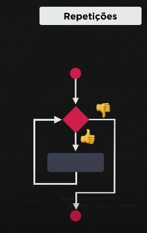
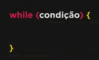
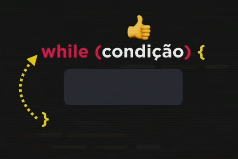
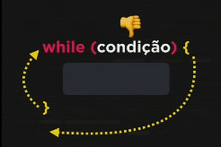

Nessa aula iremos aprender os comandos while e do while, representadas no exerício 014
Essas estruturas de repetições podem ser chamadas também de laços ou iterações.
Uma repetição (ou laço) começa exatamente como uma condição, testando uma expressão e da mesma maneira que acontecia nas expressões de condição, tendo duas possibilidades: ou é verdadeiro ou é falso. Mas o comportamento é diferente. Caso a condição seja verdadeira ele executa o bloco, mas não segue para o próximo, ele vai voltar (fazer uma repetição/um laço). Voltando para a condição ele testa novamente e se continuar verdadeiro, ele faz outra repetição e vai continuar nessas repetições enquanto for verdadeira, seguindo até dar um resultado falso.
Sintaxe:
Condição verdadeira:
Condição falsa:
